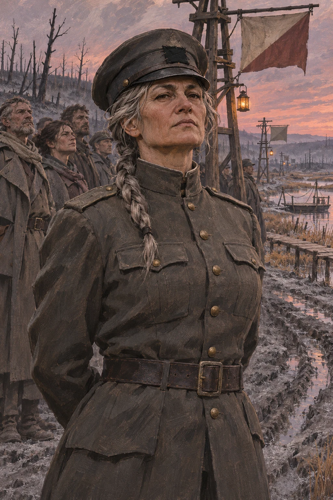

Пронести ящик Чаши по Долгому настилу через засаду Кондрата к окружной вехе — а если ящик потерян, донести хотя бы копии Ефима.
Кондрат ОбухПлатон Сажин

Рума СедыхНелла Арк
Туман над топью стоит по пояс, и Долгий настил уходит в него шестью шагами досок: сваи с ржавыми фонарными крюками, гнилые края в камыше, а посередине прогоревший пролёт, чёрный, как старый флаг. Далеко на востоке из тумана торчит окружная веха, за ней — вышка пристани. Окованный ящик Чаши тяжёл, как ведро мокрого песка; при каждом шаге в нём постукивают двадцать семь бирок. Ефима с вами нет. Его счёт теперь несёте вы.
Подготовка и роли
Финал: 25 / 75 / 30 минут; бой длится 5–6 раундов (ящик идёт 3 клетки за раунд), на 8 игроках около часа с четвертью. Пакет Ефима — у героя, которого стол назвал в вечер 1; в сцене 1 впишите его в карту. Правило — встреча «Засада на Долгом настиле» и раздатка «Карта настила». КОЛОННА по Р в конце вечера 7: 3 и больше — не дойдёт, одного ветерана (не Платона) снять до раунда 1 (при 5–6 игроках остаётся один Платон, и брать ящик некому); 2 — конец раунда 5; 1 — раунда 3; 0 — раунда 2, с Румой. ВЫШКА: Нелле писали в вечер 1 или 3 или вчера дали знак — 18, иначе 20; люди Неллы на вышке, не на досках. ЛОДКА у 17/1, если её не отвязали. РАСПИСКА — есть ли. ЕФИМ на настил не выходит: при Р 2 и меньше он в колонне Румы, при 3 и больше — у Двух вех. ЯЩИК «Я» несёт герой, которого назвал стол, со 2/3. СТРЕЛКИ в раунде 1 не стреляют; с раунда 2 бьют горящей стрелой в ящик, которого не держит противник; ящик у ветерана — бьют героя рядом; уходят с 5 хитами. ВЕТЕРАНЫ идут к ящику и берут его; путь закрыт героем — бьют копьём этого героя; уходят с 4 хитами, при Руме — только по расписке или с 4 хитами. КОНДРАТ в раунде 1 стоит; дальше рубит несущего или героя рядом с ящиком; с 27 хитами или меньше в начале хода уходит к лодке или в камыши, не атакуя, и в конце того раунда уходят стрелки, а пехота — если Румы нет. КОЛОННА с конца раунда прибытия в столбцах 1–2, в конце каждого следующего занимает ещё 5 столбцов на восток (с Румой 4); ящик в её столбцах — у Румы, герой — выведен из боя живым. КОНЕЦ БОЯ: «Сгорел» и «У Румы» — сразу; «Донесли» — в конце раунда; исход сцены 3 смотрят в этот миг. Героев смерть не ждёт: упавшие оглушены. Таблицу исходов не читать, эпилогов не играть.
Пелагея Клён сбивает пламя с ящика бонусным действием из укладки и держит несущего на ногах Лечащим словом.
Анфиса Рой первой видит засаду в трубу поста и идёт передним краем клина по хребту настила; с пакетом она ближе всех к вехе.
Елисей Дымов бьёт стрелков в камышах; «Туманный шаг» выносит его к ним сверх предела.
Роксана Тур держит ветеранов у прогоревшего пролёта и может прочесть им расписку.
Леон Ключ, Ада Полынь и Осип Лён — вторые руки у ящика: принимают его, встают в Заслон, сбивают пламя; при восьми четверо у ящика, четверо против пехоты и стрелков.
Сцена 1 · 25 минут
Выход на настил
Последний флаг: ведущий показывает «Ф» на карте мачт — колонна там, где её оставил вечер 7, — и говорит, где Ефим: в колонне Румы или у Двух вех. Потом кладёт на стол «Карту настила» и вслух заполняет строки, по фразе на каждую. Колонна: разрыв 3 и больше — не дойдёт, одного ветерана (не Платона) снять; 2 — конец раунда 5; 1 — раунда 3; 0 — раунда 2, с Румой. Вышка: Нелле писали или вчера дали знак — 18, иначе 20. Лодка: есть или нет. Расписка: есть или нет. Ящик несёт: герой, которого назвал стол, со 2/3. Пакет у: того, кому его отдали в вечер 1. Затем ведущий читает правила с карты: шесть клеток за ход, ящик — не больше трёх клеток за раунд, передача соседу, Заслон — один на весь отряд за раунд, «Сбить пламя». Стол договаривается вслух: кто несёт ящик, кто встаёт в Заслон, кто идёт впереди, кто бьёт по камышам и где держится носитель пакета — у ящика или ближе к вехе.
Выборы
Выбрать строй: клин по хребту настила или плотное кольцо вокруг ящика.
Назвать, кто несёт ящик и кто встаёт в Заслон рядом с ним.
Решить, где идёт носитель пакета: у ящика или вперёд, к вехе.
Решить, кто читает расписку ветеранам, если она у отряда.
Проверка и путь без броска
Внимательность СЛ 12 — в камышах у восточного конца блестит металл и тянет смолой: засада ждёт за прогоревшим пролётом, и стрелы у неё будут горящие. Без броска — Анфиса видит то же в трубу поста. Знание меняет только строй, который выберет стол; расстановка и раунд 1 те же.
Если не получилось
Не договорились — ведущий ставит «клин»: Анфиса и Роксана впереди по ряду 3, ящик у Стаса на 2/3, Пелагея рядом с ним, Елисей сзади бьёт по стрелкам; места 6–8 — ещё один у ящика, остальные по стрелкам. Пакет — у того, кому его отдали в вечер 1.
Сцена 2 · 75 минут
Засада
Встреча «Засада на Долгом настиле». Из камыша за пролётом встают ветераны охраны и стрелки с жетонами «К. О.» (по пакету: ветераны 2/2/3/3, стрелки 2/3/3/4 на 5–8 игроков); Кондрат — у восточного края. Первый ветеран всегда Платон; он молча смотрит на ящик. Если отца остановили у колодца, в раунде 1 Платон говорит вслух: «Кондрат платил людям. За отца. Не за живого». Кондрат в раунде 1 стоит: «Ящик — майору, ребята! Так велела майор!» — а за его спиной стрелки поджигают стрелы и пока не стреляют. С раунда 2 они бьют горящей стрелой в ящик, если его не держит противник. Ветераны идут к ящику, чтобы взять его и тащить к лодке или к колонне. С раунда 2 Кондрат идёт к ящику и рубит несущего или героя рядом: «Настил длинный. На длинном настиле всякое бывает». С 27 хитами или меньше в начале хода: «Своих людей класть не стану» — к лодке или в камыши; в конце раунда за ним уходят стрелки, а ветераны — если Румы нет. Колонна с прибытия идёт по настилу; при Р 0 с ней Рума: «Ящик — ко мне. Полк своих бумаг не сдаёт». Ефим остался у её обоза, за западным концом, и молчит.
Выборы
Нести ящик по хребту (ряд 3) или в обход за сваями.
Встать в Заслон рядом с ящиком — один на отряд за раунд.
Сбить пламя с ящика действием рядом.
Ударить ветерана с ящиком: любой урон — он роняет ящик.
Прочесть ветеранам расписку из рощи.
Бить стрелков в камышах или выйти против Кондрата.
Проверка и путь без броска
Исход решает поле, не бросок. Ящик «Я»: КБ 10, целость 14; несущий идёт не больше 3 клеток, ящик — не больше 3 клеток за раунд, сколько бы рук его ни несло; передать соседу — бесплатно, раз за раунд; упавший несущий роняет ящик в своей клетке, поднять — действие рядом. Горящая стрела: +3 против КБ 10 (+2 за сваю), 1к8+1 целости, не в раунде 1. Заслон: выстрел или «Взять» принимает герой рядом, не несущий; один на отряд за раунд. Сбить пламя — действие рядом, без броска, +2, не выше 14 (Пелагея — бонусным, укладкой). «Взять» — +3 против КБ 10, после движения; тащит со следующего хода до 3 клеток к 17/1 или к краю колонны; любой урон — роняет. Платон ящик не берёт и бьёт только героя, который ударил его. Кондрат — берсерк SRD: КБ 13, 67 хитов, секира +5, 1к12+3. Расписка: раз за бой, герой в 6 клетках от ветерана, без броска — в конце раунда ветераны уходят на запад, Платон первый: «Это не приказ майора»; ящик у ветерана брошен.
Если не получилось
Упавший герой оглушён, лежачих не добивают. Герой в столбцах колонны в конце раунда выведен из боя: держат на копьях, жив. Исход решает только конец боя, не число упавших.
Сцена 3 · 30 минут
За вехой
Исход смотрят в миг, когда бой кончился. «Ящик у стола». Несущий ставит ящик на окружной стол у вехи. Нелла Арк поднимает крышку, пересчитывает бирки вслух — двадцать семь, шесть коротких; если Арсен назвал себя, двадцать первую кладёт отдельно: «Арсен Луг. Живой». Потом читает завет до подписи: «Рума Седых. Кондрат Обух» (и за наём — при расписке). «Ефим Сажин. Платон Сажин — вписан обратно. Олет Морин. Семён Узлов. Смена четырнадцатого» — и согласившиеся герои поимённо. «Явка добровольная. Названные — свидетели, не обвиняемые. Следующее». «Копии у стола». Ящик сгорел или у Румы; носитель пакета кладёт на стол клеёнку с копиями. Нелла читает лист № 14 и вписывает имена одно за другим: «Без бирок тоньше. Но подписи на месте». «Пепел». Ящик потерян, пакет не дошёл. Нелла открывает книгу на чистой странице: «Говорите. Я запишу с ваших слов» — и пишет то, что скажут герои. Последний кадр — Ефим там, куда его поставила судьба: в колонне Румы, без ремня, на шаг позади майора, — или у Двух вех, где перевозчик Неллы ставит лодку на воду: «Завтра по реке. К вашему столу».
Выборы
Поставить ящик на стол и стоять рядом, пока Нелла читает.
Отдать Нелле пакет — или оставить его у себя.
Сказать Нелле своими словами, что было на настиле, — или промолчать.
Проверка и путь без броска
Исход — в миг конца боя. «Сгорел» — целость 0, сразу. «У Румы» — ветеран с ящиком кончил движение в 17/1, пока там лодка (сразу), или ящик в конце раунда в столбцах колонны. Конец раунда — по порядку: колонна, «Донесли», уходы. «Донесли»: ящик не у противника и в столбце 20+ (18+ с вышкой) — или противники ушли или упали (колонна не в счёт), а ящик в столбце 12+. «Донесли» — «Ящик у стола». Сгорел или у Румы: носитель пакета на ногах в столбце 20+ (18+) или на досках вне колонны — «Копии у стола»; иначе — «Пепел». Исход наступил — раундов больше нет.
Если не получилось
Если в листе нет ни одного согласившегося героя, Нелла читает смену должностями: «Старший смены и караульные поста „Сухой мост“». В «Пепле» имена согласившихся она пишет только с их слов. Исходы играются так же.
Каждая мачта Пепельной Межи отметила колонну двадцати семи: «пропущено, 27», на посту «Сухой мост» — «рабочая команда». Среди подписей — смена поста «Сухой мост» четырнадцатого числа (в копии стоят имена только тех героев, чьи игроки согласились; иначе — одни должности), перевозчик Семён Узлов, сержант конного лагеря Олет Морин и при приёме у Чаши — старшина Кондрат Обух. Внизу: «Работ не прекращать. Е. С., К. О.».
Получение
Вскрыть клеёнчатый пакет Ефима в любой момент — это выбор, а не проверка; или увидеть лист, который Ефим сам кладёт перед отрядом, дописав завет у колодца в вечер 6. Ведущий выдаёт «Проходной лист № 14 (копия)».
Запасной путь
Если лист так и не увидели, смена «Сухого моста» названа в «Завете Ефима» (имена только согласившихся героев); в финале лист у Неллы читают вслух, если до стола дошёл пакет.
Изменения после решений
Если «Ящик у стола» → Бирки, завет и копии у окружного стола; имена согласившихся героев в завете и в окружной книге свидетелями; охрана дорог больше не пустит их под свои мачты; Рума знает, кто донёс ящик.
Если «Ящик у стола» или «Копии у стола», и у отряда расписка из рощи → Нелла записывает Кондрата Обуха и за наём; расписка ложится в её футляр рядом с копиями.
Если «Копии у стола» → У стола копии и лист № 14 с именами согласившихся героев; бирки и подписанный завет сгорели или у Румы. Дело тоньше, но открыто; Рума сохранила полковые бумаги.
Если «Пепел» → У стола только слово героев: Нелла записывает его как показание, имена — с их слов. Кондрат добился своего; Рума сохранила полк. Ефим жив там, где его оставил разрыв.
Выдать в нужный момент
Карта настила — Вечер 8, сцена 1: ведущий кладёт карту на стол до первого раунда и вслух заполняет шесть строк — колонна (по разрыву в конце вечера 7: 3 и больше — не дойдёт, одного ветерана (не Платона) снять; 2 — конец раунда 5; 1 — раунда 3; 0 — раунда 2, с Румой), вышка (18, если её предупредили письмом или зеркальцем, иначе 20), лодка (отвязана в вечер 7 — нет), расписка, кто несёт ящик Чаши (герой, которого назвал стол; начинает на 2/3, а если там стоит седьмой герой, они меняются местами) и у кого пакет Ефима. Ефима на поле нет. Поведение противников — в тактике встречи «Засада на Долгом настиле».
Завершение вечера
Сцена кончается в миг исхода: «Ящик у стола» — Нелла закрывает крышку и говорит «Следующее»; «Копии у стола» — она кладёт лист № 14 в футляр; «Пепел» — она дописывает строку с ваших слов. Последний кадр — Ефим: в колонне Румы, без ремня, на шаг позади майора, — или у Двух вех, у лодки перевозчика Неллы. Ведущий закрывает папку. Что делать со своей строкой в листе, герои решат поступками после стола, а не речью здесь.